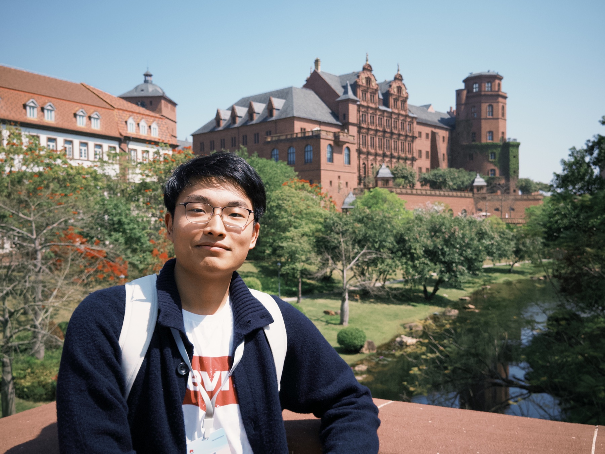

Reasoning & post-training
Studying the data, objectives, and optimization choices that strengthen model reasoning.
MechanismsUndergraduate researcher at CUHK
I’m Zheng Wang (王铮). I study large language model reasoning, agent systems, and rigorous evaluation — with a growing interest in AI for science.

01 / About
I am a B.Eng. student in Artificial Intelligence: Systems and Technologies at The Chinese University of Hong Kong. My work sits between empirical NLP research and end-to-end system building.
I am especially interested in how models reason across people, contexts, and long-running tasks — and how better data, objectives, and evaluation can make tool-using agents more capable and reliable.
02 / Research
Three connected directions, grounded in experiments and reusable systems.
Studying the data, objectives, and optimization choices that strengthen model reasoning.
MechanismsBuilding tool-using and multi-agent workflows that can plan, interact, and collaborate.
SystemsDesigning benchmarks and metrics for trustworthy, human-centered model assessment.
Evidence03 / Publications
Research spanning human-centered evaluation and agentic AI in medicine.
A benchmark built from 1,249 seeker profiles across five life stages, combining multi-agent simulation with a TypeScript platform for expert evaluation.
Publication link forthcomingA structured review of medical-agent architectures, clinical applications, evaluation practices, and open challenges.
ACL Anthology04 / Experience
The Chinese University of Hong Kong
Adapted Schur Complement Entropy as a semantic-diversity metric for high-dimensional LLM outputs and built an optimized Python evaluation toolkit.
Howden Hua Engineering Co., Ltd. · Beijing
Developed and validated predictive models for industrial fan performance in a real manufacturing environment.
The Chinese University of Hong Kong
Systems and Technologies programme. ELITE Stream Scholarship (2023/24) and Undergraduate Summer Research Grant (2025).